作者 ：stormzhang
原文链接： http://stormzhang.com/devtools/2016/01/15/google-chrome-extension/（点击尾部阅读原文前往）已获转载授权
一直都对Chrome情有独钟，第一次接触她只因她的icon就喜欢上她了，后来便一发不可自拔，现在几乎成为程序员最喜欢用的浏览器，至于优点很明显：强大的Developer Tools，响应快速，支持各种插件。当然也有些劣势，比如稍微占点内存，但是在如今这个硬件这么便宜的时代，这点几乎可以忽略，今天我就来给大家推荐下我自己常用的一些Chrome插件，你在别处可看不到，可以这么说，熟练使用这些插件，会对你的开发效率大大提高，逼格瞬间上升一个档次。
在Chrome Store直接搜索即可添加（要会科学上网哦）
1、Momentum
装逼利器，教你如何优雅的使用Chrome，新打开一个Tab的时候再也不是一片空白，每天一副精美图片，给你们看下我今天的桌面感受下。
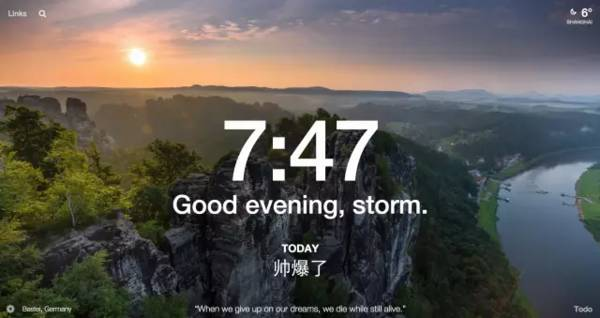
2、OneTab
强烈推荐，使用场景是这样的，我们使用Chrome经常会一次打开好多tab，很多是会用到的，又不舍得关，内存又耗着，这个时候点击下OneTab，直接把所有tab回收，然后每天的历史都给你记录着，接着你可以一键还原某一天的tab，真乃为Chrome而生。
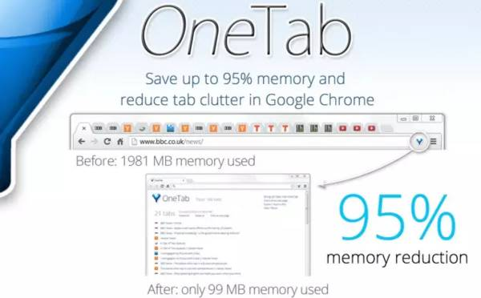
3、Save to Pocket
相信很多人都用过Pocket，这也是我一直学习必备的App，比如你经常看博客，看到好的文章，然后装个这个插件就可以直接保存到Pocket，这个时候你手机上的Pocket客户端同步过来，不管你在做地铁，还是在上厕所都可以利用这些碎片时间消化保存的知识，比利用这些时间刷知乎好多了，强烈推荐大学生或者工作经验没多久迫切需要学习的人。
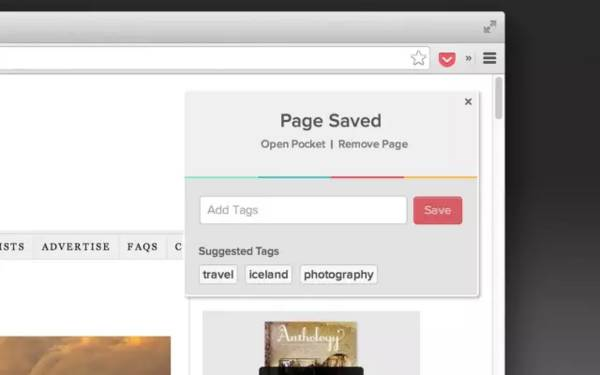
4、Page Ruler
这个工具设计师必备，可以直接查看网页一些图片的详细像素大小、具体位置等，非常实用。
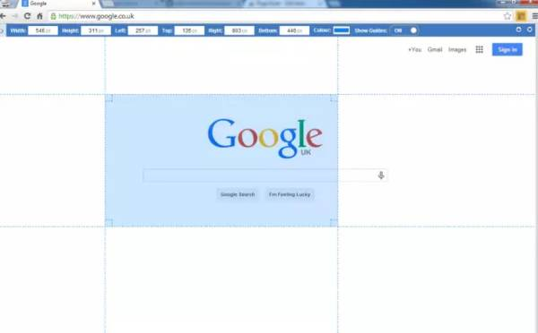
5、Alexa Traffic Rank Alexa
Alexa排名是指网站的世界排名，非常有权威。直接主流网站或博客绝对是有Alexa排名的，我们在浏览博客或者网站的时候就可以通过Alexa排名知晓该网站的流行程度，适用于经常看博客的人，装了这个插件一键查看网站排名，截个我个人博客stormzhang博客精华的排名给大家感受下。
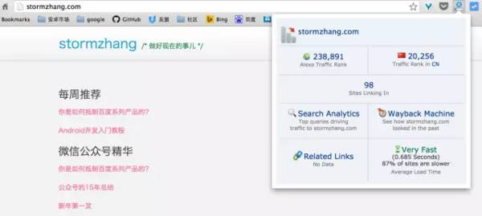
上面只是热身，下面都是跟我们开发密切相关的，注意前方高能：
GitHub俗称为“全球最大的程序员同性社交社区”，足以见他在程序员心中的地位，几乎每个程序员都必须要有一个GitHub账号，那么就来推荐下GitHub三件套。
6、Isometric Contributions
一个小玩意，可以让你在GitHub上的commit像盖楼一样的展示，很有趣，展示下Android大神Jake Wharton的commit情况。
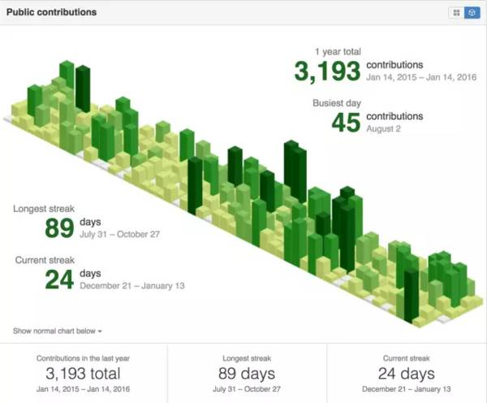
7、Avatars for Github
顾名思义，默认我们在GitHub主页动态只能看到id的，而安装了这个插件就可以看到GitHub头像了，让你一眼就能知道是谁，给你们看下我的GitHub主页动态。
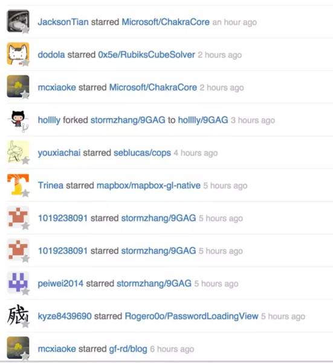
8、Octotree
这个可就屌了，当我们在浏览别人的开源代码时，还要clone下来一个文件查看，而有了这个插件，你可以直接在Chrome侧边栏向打开文件夹一样的查看别人的项目，简直了。给大家看下查看我的开源项目的正确方式。

接下来是Android开发必备插件了，效率提升百倍！
9、JSONView
一般我们在对接api接口的时候，一般都是默认返回json格式，想要查看具体返回哪些内容的时候通过Chrome查看全乱的，而且中文编码也不对，而有了这个插件就不一样了，自动跟你排列出Json数据，不管返回数据有多复杂，你都可以很直观的了解他的数据格式，简直开发者必备。
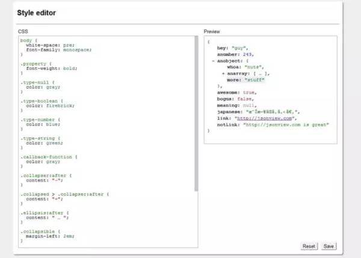
10、Postman
开发者在调试网络时候，Linux平台一般常用curl这种命令行工具，而如果你不会使用或者不习惯命令行，那Postman是你的不二人选，可以直接发送一个请求，自定义params、header，查看response状态等。
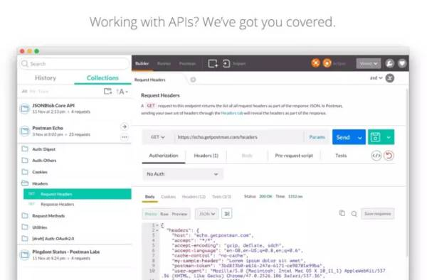
11、ChromeADB
这个可以说是Android开发者才用得上，这个插件的具体作用就是可以控制你的手机，当然前提必须是你的adb已经连接上了，不管是通过USB也好还是通过Wifi也好（不知道怎么通过Wifi连接的可以去我博客找），然后可以查看你的内存、硬盘使用情况，还自带一个Controller，可以远程控制你的手机，比如我曾经就在手机wifi连接到adb的情况下，在我媳妇把玩我手机情况下突然放了首她爱听的音乐，当时的惊喜你们脑补下。
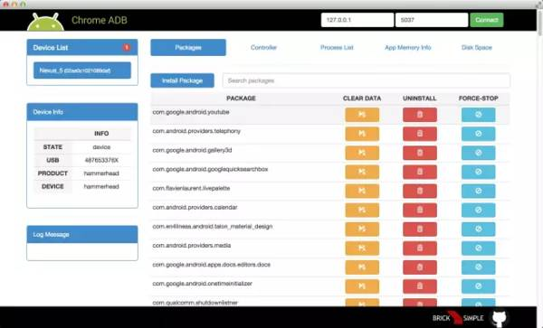
12、Vysor
这个插件的使用场景是这样的，假如你在做一个Android App的演讲，但是手机屏幕太小，这个时候安装了这个插件就可以让手机画面投影到电脑上来（在iOS系统实现这个很方便），而且延时几乎很小，这个插件一般用不到就把他禁用，一旦用到的时候会非常有用。
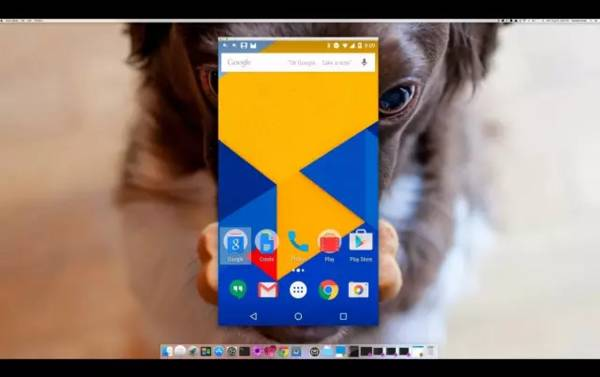
13、Dribbble New Tab
大名鼎鼎的Dribble，堪称设计师必备，而装了这个插件，可以让你打开空白tab的时间第一时间把每日精选作品展现出来，视觉的享受，强烈推荐给设计师们，装了这个插件我的桌面是这样的。（这个插件跟Momentum同时只能使用一个）
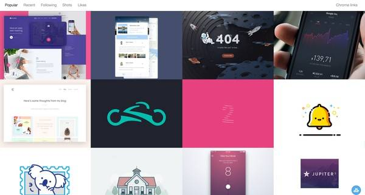
14、Clearly
Evernote出品，这个强烈推荐！！不管你是用Evernote记笔记也好，还是用来阅读也好，网页看到好东西直接保存到Evernote，你们以为它只能同步么？错了，最有用的是他可以把阅读的内容以一种非常友好的方式阅读，统一阅读体验堪称网页版的Kindle。下面以我的博客举个例子：
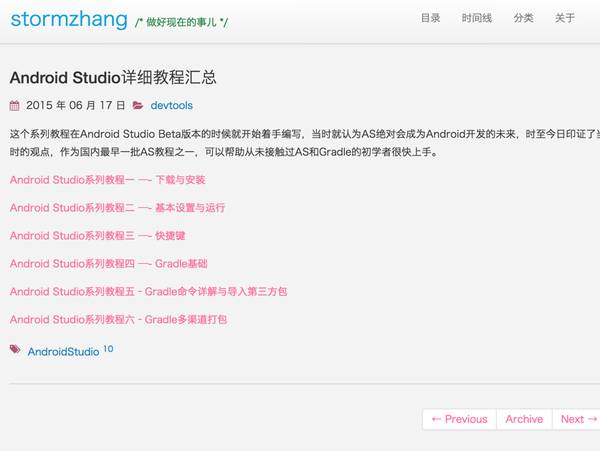
点击Clearly插件的时候阅读体验变成这样：
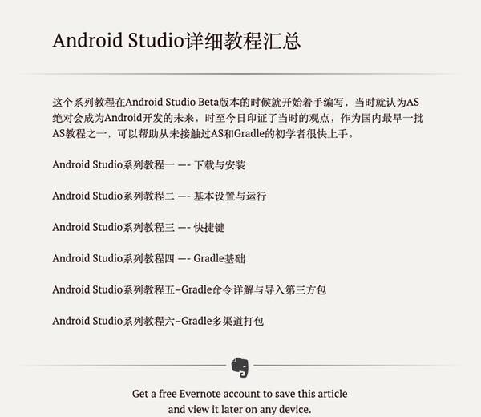
15、LastPass
是不是平时上网很多网站各种密码记不住？都用一个密码又怕一个网站的密码泄露全军覆没，有了这个就不用怕了，用官方原话解释就是：Free Password Manager，你值得拥有。
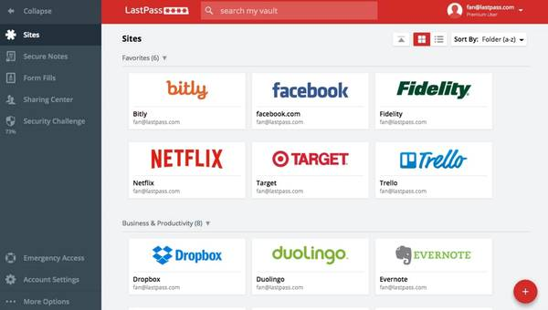
●本文编号1459，以后想阅读这篇文章直接输入1459即可。
●本文分类“工具”，搜索分类名可以获得相关文章。
●输入m可以获取到全部文章目录发人员。
前端开发↓↓↓

Web开发↓↓↓

![]()